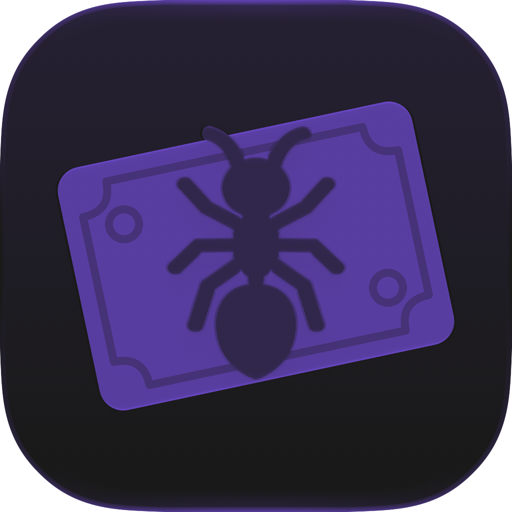
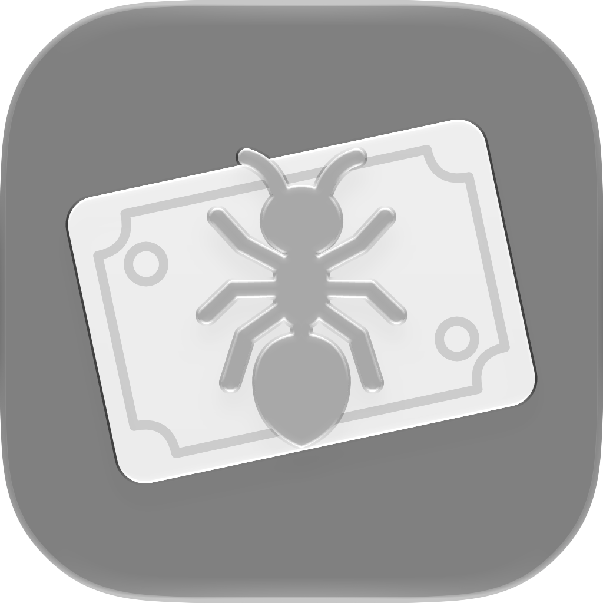

Formica sulla banconota
MVP di icona alternativa per Formi. Anteprime esportate dal renderer Apple: materiali Liquid Glass applicati ai livelli vettoriali.
Default
Dark
Tinted Light

Tinted Dark

Clear Light
Clear Dark
Documento Icon Composer · Concept imagegen
Prototipo non integrato nell’app. Da valutare anche nella Home su dispositivo.